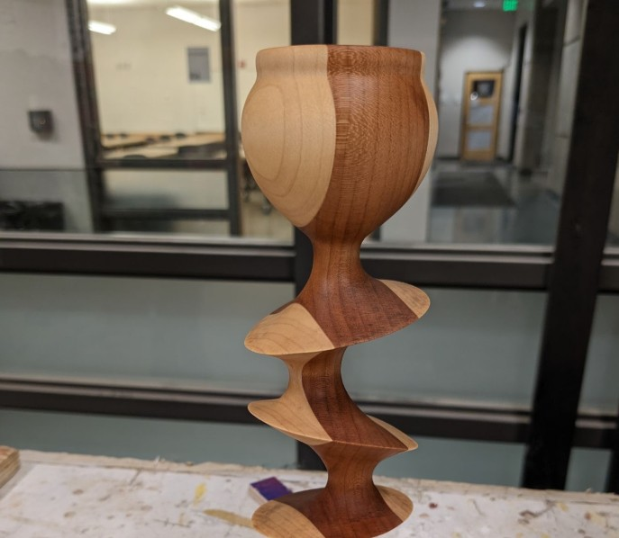

Wood shop is seperate from general BTU access and requires an orientation. The orientation schedule can be found on the BTU Lab Calender.
Access to certian machines is facilitated by BTU Mischief Makers. Anyone can become a Mischief Maker on any machine.

How to Use
FOR YOUR SAFETY major equipment including the table saw, hand saw, belt sander, chop saw, and drill press are powered off between the hours of 10pm and 6am daily.
Tampering with timers is considered a serious safety violation
BTU Wood Shop Policies
Violation of any wood shop policy will result in loss of access to BTU Lab and the wood shop until both orientations are repeated.
Following orientation, you may use the wood shop under the following conditions:
- Observe all safety rules without exception.
- Do not work alone when no one could hear you if you needed assistance. Stay in earshot.
- Do not operate any tool that you are unfamiliar with. Get assistance.
- Do not alter any machine in a permanent way.
- Do not remove any tools from the wood shop or BTU Lab without staff approval.
- Do not attempt to repair a malfunctioning tool.
- Report malfunctioning tools. It is okay when a tool breaks under normal circumstances. A malfunctioning machine can be dangerous if a problem isn't understood. We just want to know what happened to prevent any possible harm.
- BTU Staff reserve the right to revoke wood shop access for any reason.
Deadlines, fatigue, and other lack of preparation do not justify ignoring any wood shop policy
Multiple violations of wood shop policy, by one or more individuals, will result in reduced access for everyone including locking out machines or the entire space when staff are not available.
Equipment & Supplies
- Table Saw
- Band Saw
- Drill Press
- Chop Saw
- Belt Sander
- Random Orbit Sander
- Palm Router
- Drills/Drivers
- Hand Saws
- Files
- Measuring Tools
- Other Hand Tools
- ...and more!